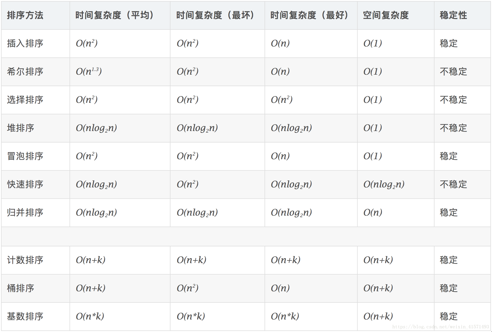
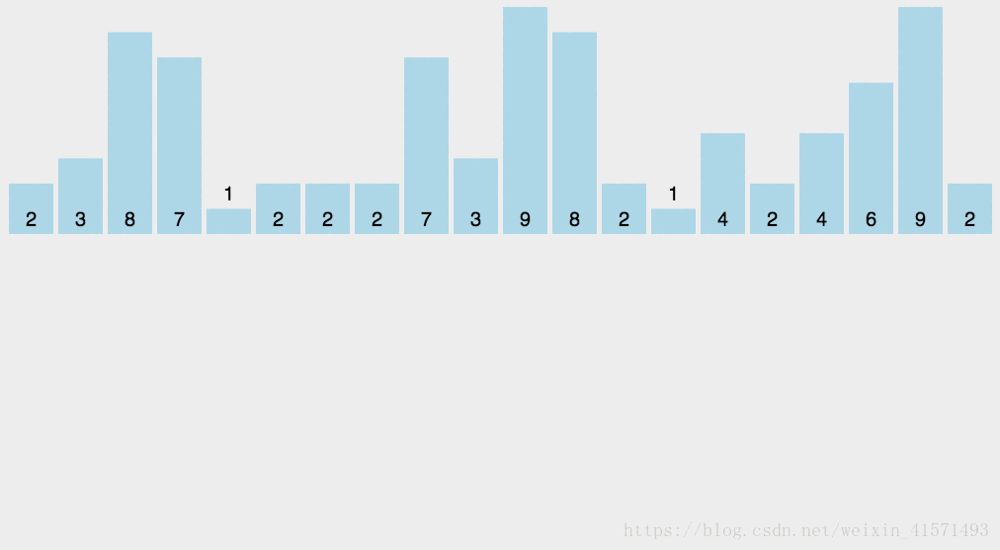
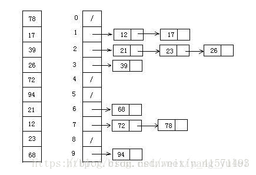
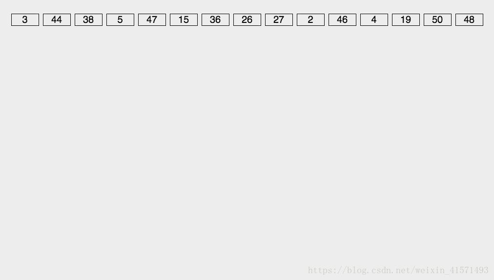

原文连接:https://www.cnblogs.com/tolearnpy/p/11564226.html
十大排序算法（Python实现）
一. 算法介绍及相关概念解读
算法分类
十种常见排序算法可以分为两大类：
非线性时间比较类排序：通过比较来决定元素间的相对次序，由于其时间复杂度不能突破O(nlogn)，因此称为非线性时间比较类排序。
线性时间非比较类排序：不通过比较来决定元素间的相对次序，它可以突破基于比较排序的时间下界，以线性时间运行，因此称为线性时间非比较类排序。

相关概念
稳定：如果a原本在b前面，而a=b，排序之后a仍然在b的前面。
不稳定：如果a原本在b的前面，而a=b，排序之后 a 可能会出现在 b 的后面。
时间复杂度：对排序数据的总的操作次数。反映当n变化时，操作次数呈现什么规律。
空间复杂度：是指算法在计算机内执行时所需存储空间的度量，它也是数据规模n的函数。
1. 交换排序
1.1 冒泡排序(Bubble Sort)
比较相邻的元素。如果第一个比第二个大，就交换它们两个；
对每一对相邻元素作同样的工作，从开始第一对到结尾的最后一对，这样在最后的元素应该会是最大的数；
针对所有的元素重复以上的步骤，除了最后一个；
重复步骤1~3，直到排序完成。
冒泡排序对n个数据操作n-1轮，每轮找出一个最大（小）值。
操作只对相邻两个数比较与交换，每轮会将一个最值交换到数据列首（尾），像冒泡一样。
每轮操作O(n)次，共O（n）轮，时间复杂度O(n^2)。
额外空间开销出在交换数据时那一个过渡空间，空间复杂度O(1)

def BubbleSort(lst):
n=len(lst)
if n<=1:
return lst
for i in range (0,n):
for j in range(0,n-i-1):
if lst[j]>lst[j+1]:
(lst[j],lst[j+1])=(lst[j+1],lst[j])
return lst
x=input("请输入待排序数列：\n")
y=x.split()
arr=[]
for i in y:
arr.append(int(i))
arr=BubbleSort(arr)
#print(arr)
print("数列按序排列如下：")
for i in arr:
print(i,end=' ')1.2 快速排序(Quick Sort)
从数列中挑出一个元素，称为 “基准”（pivot）；
重新排序数列，所有元素比基准值小的摆放在基准前面，所有元素比基准值大的摆在基准的后面（相同的数可以到任一边）。在这个分区退出之后，该基准就处于数列的中间位置。这个称为分区（partition）操作；
递归地（recursive）把小于基准值元素的子数列和大于基准值元素的子数列排序。
快速排序基于选择划分，是简单选择排序的优化。
每次划分将数据选到基准值两边，循环对两边的数据进行划分，类似于二分法。
算法的整体性能取决于划分的平均程度，即基准值的选择，此处衍生出快速排序的许多优化方案，甚至可以划分为多块。
基准值若能把数据分为平均的两块，划分次数O(logn)，每次划分遍历比较一遍O(n)，时间复杂度O(nlogn)。
额外空间开销出在暂存基准值，O(logn)次划分需要O(logn)个，空间复杂度O(logn)
def QuickSort(lst):
# 此函数完成分区操作
def partition(arr, left, right):
key = left # 划分参考数索引,默认为第一个数为基准数，可优化
while left < right:
# 如果列表后边的数,比基准数大或相等,则前移一位直到有比基准数小的数出现
while left < right and arr[right] >= arr[key]:
right -= 1
# 如果列表前边的数,比基准数小或相等,则后移一位直到有比基准数大的数出现
while left < right and arr[left] <= arr[key]:
left += 1
# 此时已找到一个比基准大的书，和一个比基准小的数，将他们互换位置
(arr[left], arr[right]) = (arr[right], arr[left])
# 当从两边分别逼近，直到两个位置相等时结束，将左边小的同基准进行交换
(arr[left], arr[key]) = (arr[key], arr[left])
# 返回目前基准所在位置的索引
return left
def quicksort(arr, left, right):
if left >= right:
return
# 从基准开始分区
mid = partition(arr, left, right)
# 递归调用
# print(arr)
quicksort(arr, left, mid - 1)
quicksort(arr, mid + 1, right)
# 主函数
n = len(lst)
if n <= 1:
return lst
quicksort(lst, 0, n - 1)
return lst
print("<<< Quick Sort >>>")
x = input("请输入待排序数列：\n")
y = x.split()
arr = []
for i in y:
arr.append(int(i))
arr = QuickSort(arr)
# print(arr)
print("数列按序排列如下：")
for i in arr:
print(i, end=' ')2. 插入排序
2.1 简单插入排序(Insert Sort)
从第一个元素开始，该元素可以认为已经被排序；
取出下一个元素，在已经排序的元素序列中从后向前扫描；
如果该元素（已排序）大于新元素，将该元素移到下一位置；
重复步骤3，直到找到已排序的元素小于或者等于新元素的位置；
将新元素插入到该位置后；
重复步骤2~5。
简单插入排序同样操作n-1轮，每轮将一个未排序树插入排好序列。
开始时默认第一个数有序，将剩余n-1个数逐个插入。插入操作具体包括：比较确定插入位置，数据移位腾出合适空位
每轮操作O(n)次，共O（n）轮，时间复杂度O(n^2)。
额外空间开销出在数据移位时那一个过渡空间，空间复杂度O(1)。
def InsertSort(lst):
n=len(lst)
if n<=1:
return lst
for i in range(1,n):
j=i
target=lst[i] #每次循环的一个待插入的数
while j>0 and target<lst[j-1]: #比较、后移，给target腾位置
lst[j]=lst[j-1]
j=j-1
lst[j]=target #把target插到空位
return lst
x=input("请输入待排序数列：\n")
y=x.split()
arr=[]
for i in y:
arr.append(int(i))
arr=InsertSort(arr)
#print(arr)
print("数列按序排列如下：")
for i in arr:
print(i,end=' ')2.2 希尔排序(Shell Sort)
先将整个待排序的记录序列分割成为若干子序列分别进行直接插入排序，具体算法描述：
选择一个增量序列t1，t2，…，tk，其中ti>tj，tk=1；
按增量序列个数k，对序列进行k 趟排序；
每趟排序，根据对应的增量ti，将待排序列分割成若干长度为m 的子序列，分别对各子表进行直接插入排序。仅增量因子为1 时，整个序列作为一个表来处理，表长度即为整个序列的长度。
希尔排序是插入排序的高效实现（大家可以比对一下插入排序和希尔排序的代码），对简单插入排序减少移动次数优化而来。
简单插入排序每次插入都要移动大量数据，前后插入时的许多移动都是重复操作，若一步到位移动效率会高很多。
若序列基本有序，简单插入排序不必做很多移动操作，效率很高。
希尔排序将序列按固定间隔划分为多个子序列，在子序列中简单插入排序，先做远距离移动使序列基本有序；逐渐缩小间隔重复操作，最后间隔为1时即简单插入排序。
希尔排序对序列划分O(n)次，每次简单插入排序O(logn)，时间复杂度O(nlogn)
额外空间开销出在插入过程数据移动需要的一个暂存，空间复杂度O(1)
def ShellSort(lst):
def shellinsert(arr,d):
n=len(arr)
for i in range(d,n):
j=i-d
temp=arr[i] #记录要出入的数
while(j>=0 and arr[j]>temp): #从后向前，找打比其小的数的位置
arr[j+d]=arr[j] #向后挪动
j-=d
if j!=i-d:
arr[j+d]=temp
n=len(lst)
if n<=1:
return lst
d=n//2
while d>=1:
shellinsert(lst,d)
d=d//2
return lst
x=input("请输入待排序数列：\n")
y=x.split()
arr=[]
for i in y:
arr.append(int(i))
arr=ShellSort(arr)
#print(arr)
print("数列按序排列如下：")
for i in arr:
print(i,end=' ')希尔排序的核心在于间隔序列的设定。既可以提前设定好间隔序列，也可以动态的定义间隔序列。动态定义间隔序列的算法是《算法（第4版）》的合著者Robert Sedgewick提出的。
3.选择排序
3.1 简单选择排序(Select Sort)
初始状态：无序区为R[1..n]，有序区为空；
第i趟排序(i=1,2,3…n-1)开始时，当前有序区和无序区分别为R[1..i-1]和R(i..n）。该趟排序从当前无序区中-选出关键字最小的记录 R[k]，将它与无序区的第1个记录R交换，使R[1..i]和R[i+1..n)分别变为记录个数增加1个的新有序区和记录个数减少1个的新无序区；
n-1趟结束，数组有序化了。
简单选择排序同样对数据操作n-1轮，每轮找出一个最大（小）值。
操作指选择，即未排序数逐个比较交换，争夺最值位置，每轮将一个未排序位置上的数交换成已排序数，即每轮选一个最值。
每轮操作O(n)次，共O（n）轮，时间复杂度O(n^2)。
额外空间开销出在交换数据时那一个过渡空间，空间复杂度O(1)。
def SelectSort(lst):
n=len(lst)
if n<=1:
return lst
for i in range(0,n-1):
minIndex=i
for j in range(i+1,n): #比较一遍，记录索引不交换
if lst[j]<lst[minIndex]:
minIndex=j
if minIndex!=i: #按索引交换
(lst[minIndex],lst[i])=(lst[i],lst[minIndex])
return lst
x=input("请输入待排序数列：\n")
y=x.split()
arr=[]
for i in y:
arr.append(int(i))
arr=SelectSort(arr)
#print(arr)
print("数列按序排列如下：")
for i in arr:
print(i,end=' ')表现最稳定的排序算法之一，因为无论什么数据进去都是O(n2)的时间复杂度，所以用到它的时候，数据规模越小越好。唯一的好处可能就是不占用额外的内存空间了吧。理论上讲，选择排序可能也是平时排序一般人想到的最多的排序方法了吧。
3.2 堆排序(Heap Sort)
堆排序（Heapsort）是指利用堆这种数据结构所设计的一种排序算法。堆积是一个近似完全二叉树的结构，并同时满足堆积的性质：即子结点的键值或索引总是小于（或者大于）它的父节点。
将初始待排序关键字序列(R1,R2….Rn)构建成大顶堆，此堆为初始的无序区；
将堆顶元素R[1]与最后一个元素R[n]交换，此时得到新的无序区(R1,R2,……Rn-1)和新的有序区(Rn),且满足R[1,2…n-1]<=R[n]；
由于交换后新的堆顶R[1]可能违反堆的性质，因此需要对当前无序区(R1,R2,……Rn-1)调整为新堆，然后再次将R[1]与无序区最后一个元素交换，得到新的无序区(R1,R2….Rn-2)和新的有序区(Rn-1,Rn)。不断重复此过程直到有序区的元素个数为n-1，则整个排序过程完成。
堆排序的初始建堆过程比价复杂，对O(n)级别个非叶子节点进行堆调整操作O(logn)，时间复杂度O(nlogn)；之后每一次堆调整操作确定一个数的次序，时间复杂度O(nlogn)。合起来时间复杂度O(nlogn)
额外空间开销出在调整堆过程，根节点下移交换时一个暂存空间，空间复杂度O(1)
def HeapSort(lst):
def heapadjust(arr,start,end): #将以start为根节点的堆调整为大顶堆
temp=arr[start]
son=2*start+1
while son<=end:
if son<end and arr[son]<arr[son+1]: #找出左右孩子节点较大的
son+=1
if temp>=arr[son]: #判断是否为大顶堆
break
arr[start]=arr[son] #子节点上移
start=son #继续向下比较
son=2*son+1
arr[start]=temp #将原堆顶插入正确位置
#######
n=len(lst)
if n<=1:
return lst
#建立大顶堆
root=n//2-1 #最后一个非叶节点（完全二叉树中）
while(root>=0):
heapadjust(ls,root,n-1)
root-=1
#掐掉堆顶后调整堆
i=n-1
while(i>=0):
(lst[0],lst[i])=(lst[i],lst[0]) #将大顶堆堆顶数放到最后
heapadjust(lst,0,i-1) #调整剩余数组成的堆
i-=1
return lst
#########
x=input("请输入待排序数列：\n")
y=x.split()
arr=[]
for i in y:
arr.append(int(i))
arr=HeapSort(arr)
#print(arr)
print("数列按序排列如下：")
for i in arr:
print(i,end=' ')4. 归并排序
4.1 二路归并排序(Two-way Merge Sort)
归并排序是建立在归并操作上的一种有效的排序算法。该算法是采用分治法（Divide and Conquer）的一个非常典型的应用。将已有序的子序列合并，得到完全有序的序列；即先使每个子序列有序，再使子序列段间有序。若将两个有序表合并成一个有序表，称为2-路归并。
把长度为n的输入序列分成两个长度为n/2的子序列；
对这两个子序列分别采用归并排序；
将两个排序好的子序列合并成一个最终的排序序列。
def MergeSort(lst):
#合并左右子序列函数
def merge(arr,left,mid,right):
temp=[] #中间数组
i=left #左段子序列起始
j=mid+1 #右段子序列起始
while i<=mid and j<=right:
if arr[i]<=arr[j]:
temp.append(arr[i])
i+=1
else:
temp.append(arr[j])
j+=1
while i<=mid:
temp.append(arr[i])
i+=1
while j<=right:
temp.append(arr[j])
j+=1
for i in range(left,right+1): # !注意这里，不能直接arr=temp,他俩大小都不一定一样
arr[i]=temp[i-left]
#递归调用归并排序
def mSort(arr,left,right):
if left>=right:
return
mid=(left+right)//2
mSort(arr,left,mid)
mSort(arr,mid+1,right)
merge(arr,left,mid,right)
n=len(lst)
if n<=1:
return lst
mSort(lst,0,n-1)
return lst
x=input("请输入待排序数列：\n")
y=x.split()
arr=[]
for i in y:
arr.append(int(i))
arr=MergeSort(arr)
#print(arr)
print("数列按序排列如下：")
for i in arr:
print(i,end=' ')归并排序是一种稳定的排序方法。和选择排序一样，归并排序的性能不受输入数据的影响，但表现比选择排序好的多，因为始终都是O(nlogn）的时间复杂度。代价是需要额外的内存空间。
5. 线性时间非比较类排序
5.1 计数排序（Counting Sort）
找出待排序的数组中最大和最小的元素；
统计数组中每个值为i的元素出现的次数，存入数组C的第i项；
对所有的计数累加（从C中的第一个元素开始，每一项和前一项相加）；
反向填充目标数组：将每个元素i放在新数组的第C(i)项，每放一个元素就将C(i)减去1。
计数排序用待排序的数值作为计数数组（列表）的下标，统计每个数值的个数，然后依次输出即可。
计数数组的大小取决于待排数据取值范围，所以对数据有一定要求，否则空间开销无法承受。
计数排序只需遍历一次数据，在计数数组中记录，输出计数数组中有记录的下标，时间复杂度为O(n+k)。
额外空间开销即指计数数组，实际上按数据值分为k类（大小取决于数据取值），空间复杂度O(k)。

def CountSort(lst):
n=len(lst)
num=max(lst)
count=[0]*(num+1)
for i in range(0,n):
count[lst[i]]+=1
arr=[]
for i in range(0,num+1):
for j in range(0,count[i]):
arr.append(i)
return arr
x=input("请输入待排序数列：\n")
y=x.split()
arr=[]
for i in y:
arr.append(int(i))
arr=CountSort(arr)
#print(arr)
print("数列按序排列如下：")
for i in arr:
print(i,end=' ')计数排序是一个稳定的排序算法。当输入的元素是 n 个 0到 k 之间的整数时，时间复杂度是O(n+k)，空间复杂度也是O(n+k)，其排序速度快于任何比较排序算法。当k不是很大并且序列比较集中时，计数排序是一个很有效的排序算法。
5.2 桶排序（Bucket Sort）
设置一个定量的数组当作空桶；
遍历输入数据，并且把数据一个一个放到对应的桶里去；
对每个不是空的桶进行排序；
从不是空的桶里把排好序的数据拼接起来。
桶排序实际上是计数排序的推广，但实现上要复杂许多。
桶排序先用一定的函数关系将数据划分到不同有序的区域（桶）内，然后子数据分别在桶内排序，之后顺次输出。
当每一个不同数据分配一个桶时，也就相当于计数排序。
假设n个数据，划分为k个桶，桶内采用快速排序，时间复杂度为O(n)+O(k * n/k*log(n/k))=O(n)+O(n*(log(n)-log(k))),
显然，k越大，时间复杂度越接近O(n)，当然空间复杂度O(n+k)会越大，这是空间与时间的平衡。

def BucketSort(lst):
##############桶内使用快速排序
def QuickSort(lst):
def partition(arr,left,right):
key=left #划分参考数索引,默认为第一个数，可优化
while left<right:
while left<right and arr[right]>=arr[key]:
right-=1
while left<right and arr[left]<=arr[key]:
left+=1
(arr[left],arr[right])=(arr[right],arr[left])
(arr[left],arr[key])=(arr[key],arr[left])
return left
def quicksort(arr,left,right): #递归调用
if left>=right:
return
mid=partition(arr,left,right)
quicksort(arr,left,mid-1)
quicksort(arr,mid+1,right)
#主函数
n=len(lst)
if n<=1:
return lst
quicksort(lst,0,n-1)
return lst
######################
n=len(lst)
big=max(lst)
num=big//10+1
bucket=[]
buckets=[[] for i in range(0,num)]
for i in lst:
buckets[i//10].append(i) #划分桶
for i in buckets: #桶内排序
bucket=QuickSort(i)
arr=[]
for i in buckets:
if isinstance(i, list):
for j in i:
arr.append(j)
else:
arr.append(i)
for i in range(0,n):
lst[i]=arr[i]
return lst
x=input("请输入待排序数列：\n")
y=x.split()
arr=[]
for i in y:
arr.append(int(i))
arr=BucketSort(arr)
#print(arr)
print("数列按序排列如下：")
for i in arr:
print(i,end=' ') 桶排序最好情况下使用线性时间O(n)，桶排序的时间复杂度，取决与对各个桶之间数据进行排序的时间复杂度，因为其它部分的时间复杂度都为O(n)。很显然，桶划分的越小，各个桶之间的数据越少，排序所用的时间也会越少。但相应的空间消耗就会增大。
5.3 基数排序（Radix Sort）
取得数组中的最大数，并取得位数；
arr为原始数组，从最低位开始取每个位组成radix数组；
对radix进行计数排序（利用计数排序适用于小范围数的特点）；

import math
def RadixSort(lst):
def getbit(x,i): #返回x的第i位（从右向左，个位为0）数值
y=x//pow(10,i)
z=y%10
return z
def CountSort(lst):
n=len(lst)
num=max(lst)
count=[0]*(num+1)
for i in range(0,n):
count[lst[i]]+=1
arr=[]
for i in range(0,num+1):
for j in range(0,count[i]):
arr.append(i)
return arr
Max=max(lst)
for k in range(0,int(math.log10(Max))+1): #对k位数排k次,每次按某一位来排
arr=[[] for i in range(0,10)]
for i in lst: #将ls（待排数列）中每个数按某一位分类（0-9共10类）存到arr[][]二维数组（列表）中
arr[getbit(i,k)].append(i)
for i in range(0,10): #对arr[]中每一类（一个列表） 按计数排序排好
if len(arr[i])>0:
arr[i]=CountSort(arr[i])
j=9
n=len(lst)
for i in range(0,n): #顺序输出arr[][]中数到ls中，即按第k位排好
while len(arr[j])==0:
j-=1
else:
ls[n-1-i]=arr[j].pop()
return lst
x=input("请输入待排序数列：\n")
y=x.split()
arr=[]
for i in y:
arr.append(int(i))
arr=RadixSort(arr)
#print(arr)
print("数列按序排列如下：")
for i in arr:
print(i,end=' ')基数排序基于分别排序，分别收集，所以是稳定的。但基数排序的性能比桶排序要略差，每一次关键字的桶分配都需要O(n)的时间复杂度，而且分配之后得到新的关键字序列又需要O(n)的时间复杂度。假如待排数据可以分为d个关键字，则基数排序的时间复杂度将是O(d*2n) ，当然d要远远小于n，因此基本上还是线性级别的。
基数排序的空间复杂度为O(n+k)，其中k为桶的数量。一般来说n>>k，因此额外空间需要大概n个左右。
参考文章：https://blog.csdn.net/weixin_41571493/article/details/81875088